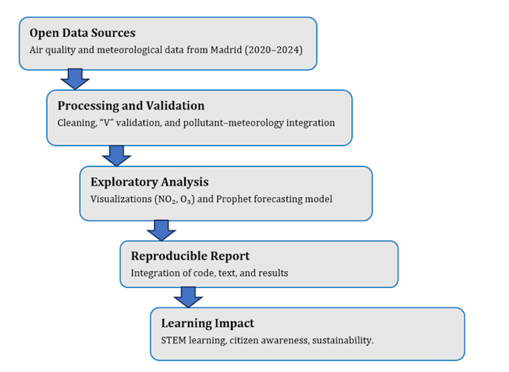
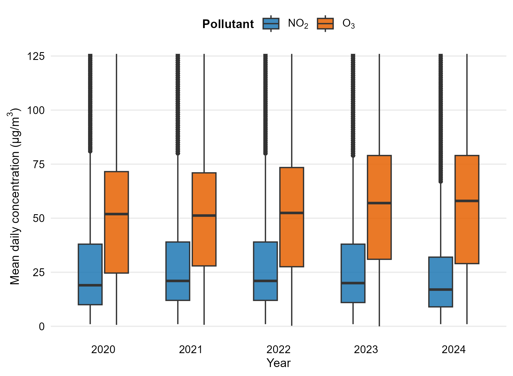
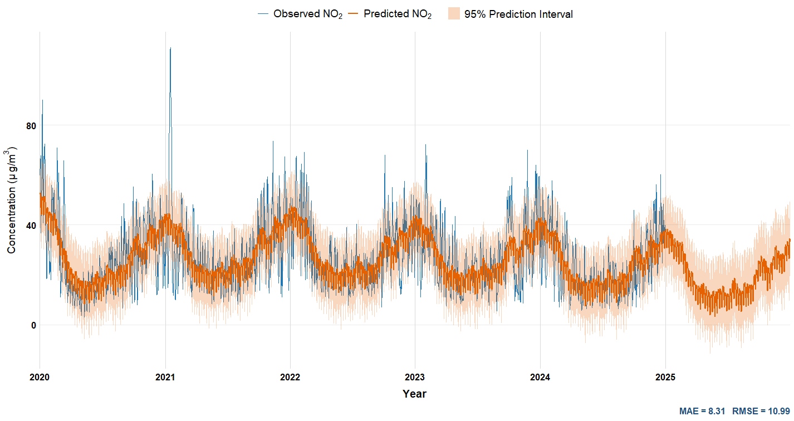
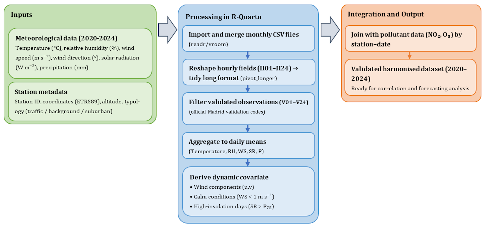
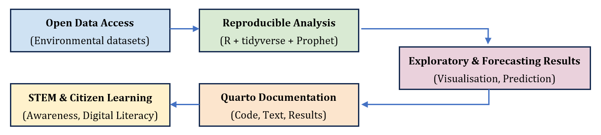

Citizen Science and STEM Education with R
Teaching and Research Companion Notebook — Open Urban Air Data from Madrid (2020–2024)
1 💡 Purpose of the Notebook
This Quarto Notebook serves as a teaching and research companion to the article
Citizen Science and STEM Education with R: Reproducible Learning from Open Urban Air Quality Data (Applied Sciences, 2025).
It reproduces the main analytical workflow implemented in the study and illustrates how R and Quarto can be integrated into STEM education to foster data literacy, environmental awareness, and methodological transparency.
2 🔠Reproducible Data Workflow
The complete workflow integrates open data, computational reproducibility, and STEM learning.
It can be applied to other urban contexts or courses focusing on environmental informatics, statistical modelling, or sustainability transitions.
3 🗂️️ Data Sources and Structure
3.1 Air Quality Data
Air quality datasets were obtained from the Madrid Open Data Portal (Portal de Datos Abiertos del Ayuntamiento de Madrid).
These include hourly measurements for the period 2020–2024, covering major urban pollutants:
- Nitrogen dioxide (NO₂)
- Ozone (O₃)
- Particulate matter (PM₁₀, PM₂.₅)
- Sulphur dioxide (SO₂)
- Carbon monoxide (CO)
Twenty-four urban monitoring stations distributed across the metropolitan area provide these observations, enabling both spatial and temporal analysis.

3.2 Pollutant Coverage
Each monitoring station is characterised by its specific set of measured pollutants and sampling frequency.
This diversity in sensor configuration offers an ideal opportunity for students to analyse coverage heterogeneity, data completeness, and measurement uncertainty within open environmental datasets.

3.3 Data Processing Workflow
The transformation from raw CSV files to harmonised analytical datasets followed a reproducible pipeline implemented entirely in R.
This process illustrates how open environmental data can be systematically prepared for both scientific research and STEM learning.
The workflow consisted of three main stages:
- Data cleaning and type correction — Monthly CSVs were read, redundant columns removed, and measurement units harmonised.
- Validation of observations — Only records with confirmed and validated readings (flagged as
VAL) were retained to ensure data integrity.
- Restructuring and optimisation — The validated data were pivoted from long to wide format and exported as Parquet files, improving reproducibility and computational efficiency for later analyses.
This modular approach helps students visualise the logic of data provenance, encouraging transparency and best practices in open science.

4 📊 Exploratory Analysis
Exploratory analysis introduces students to descriptive statistics and visual analytics in R using open environmental data.
The focus is on two key pollutants:
- Nitrogen dioxide (NO₂) — a primary pollutant linked to traffic emissions.
- Ozone (O₃) — a secondary pollutant formed photochemically from NOₓ and VOCs.
Together, these illustrate how human activity and atmospheric chemistry interact within urban ecosystems.
4.1 Annual and Seasonal Variability
The temporal evolution of NO₂ and O₃ across 2020–2024 reflects distinct seasonal and annual cycles driven by emission patterns and meteorological factors.
Students can observe that NO₂ concentrations tend to peak in winter due to traffic density and atmospheric stability, whereas O₃ levels rise in summer as a result of higher solar radiation and photochemical activity.
This comparative behaviour offers an engaging opportunity to discuss how urban dynamics, weather variability, and chemical processes interact in shaping local air quality.

4.2 Distribution Analysis
Boxplots provide an intuitive and effective way to examine dispersion, central tendency, and extreme values across pollutants.
By comparing distributions of NO₂ and O₃, students can identify seasonal contrasts, interannual variability, and potential anomalies that reflect real-world emission dynamics.
This section bridges statistical literacy and environmental understanding, showing how descriptive indicators translate into meaningful interpretations of urban air quality.

5 🔮 Forecasting with Prophet
Time-series forecasting introduces students to predictive modelling and temporal decomposition using open environmental data.
The Prophet model (Taylor & Letham, 2018) was selected for its interpretability, transparent structure, and robustness to missing values — essential features when teaching reproducible forecasting in R.
Prophet decomposes a time series into three additive components: - Trend — long-term evolution of pollutant levels.
- Seasonality — recurring intra-annual fluctuations driven by meteorological and behavioural factors.
- Residuals — short-term deviations related to random or episodic events.
This section helps students explore how patterns evolve over time, interpret the drivers of air quality, and experiment with forecast horizons and validation strategies (e.g., RMSE, MAE).
5.1 🌆 Model for NO₂
The NO₂ series reflects anthropogenic influence, particularly road traffic and winter meteorological inversions.
Students can visualise how the Prophet model isolates these periodic and structural patterns, highlighting long-term decline and seasonal peaks.

5.2 🌤 Model for O₃
Ozone concentrations display the opposite behaviour — increasing in summer under high solar radiation. Prophet effectively captures the photochemical formation dynamics and seasonal oscillations, reinforcing the complementarity between NO₂ and O₃.

6 🌦 Meteorological Integration
Meteorological factors critically influence the behaviour, transformation, and dispersion of air pollutants.
Integrating meteorological variables—temperature, solar radiation, humidity, and wind speed—from AEMET allows students to explore the coupled dynamics between atmospheric conditions and air quality indicators.
This integration exemplifies how open data from different institutions can be harmonised into a single reproducible analytical framework.
By analysing these variables together, learners understand how synoptic patterns and urban microclimates shape pollutant variability.
6.1 Integration Workflow
The following workflow summarises the harmonisation of meteorological and air-quality datasets.
It demonstrates how data alignment, temporal aggregation, and joint visualisation enable multivariate environmental analysis in R.

7 📠Learning and Reproducibility Framework
Reproducibility is both a scientific principle and a pedagogical value.
This framework connects open data, transparent computation, and reflective learning — empowering students to move from data consumers to data producers within a reproducible workflow.
Through R and Quarto, learners gain not only coding skills but also an understanding of how reproducibility sustains credibility and collaboration in science.
The visual framework below represents the ecosystem of reproducible learning, where environmental data analysis becomes an educational strategy for open, inquiry-based STEM education.

8 🌀 Spatio-Temporal Variability and Atmospheric Drivers
Understanding pollutant variability across time and space provides a crucial bridge between descriptive analysis and causal interpretation.
This section integrates the temporal and spatial dimensions of air quality, followed by their linkage with meteorological variables that modulate pollutant dynamics in the urban atmosphere.
8.1 ⏱ Temporal and Spatial Variability
The temporal evolution of NO₂ and O₃ between 2020–2024 shows clear annual cycles and gradual post-pandemic recovery patterns.
Spatially, concentrations differ by station type (urban-traffic, suburban, background), reflecting local emission sources and micro-meteorological effects.
9 🌦 Meteorological Influence
Meteorological conditions strongly influence pollutant dynamics by shaping transport, dispersion, and chemical transformation processes.
Within the urban boundary layer, parameters such as temperature, wind speed, humidity, solar radiation, pressure, and precipitation determine how NO₂ and O₃ interact over time.
This section helps students explore the coupled variability between pollutants and meteorological drivers, reinforcing the interdisciplinary nature of environmental data analysis in R.
10 🧑‍🏫 Educational Applications
Within this framework, reproducibility acts as a bridge between academic rigour and educational innovation.
It transforms the learning process into a participatory and evidence-based experience, connecting environmental science, data analysis, and civic engagement.
Core educational dimensions:
- 🔠Transparency — All analyses and visualisations can be replicated, modified, and extended.
- 🌠Engagement — Students explore socially relevant, real-world datasets on urban air quality and sustainability.
- 💡 Open pedagogy — Scripts, notebooks, and outputs are shared openly, fostering peer learning and collaboration.
- 🧠Skill transfer — Learners develop competences in R, data science, and environmental interpretation.
- 🪴 Scientific integrity — Each analytical decision is documented, reinforcing traceability and accountability in research.
This integrative approach nurtures a culture of openness and reproducibility, aligning STEM education with the broader movement of Open Science and citizen participation.
By engaging with real environmental data, students transition from passive consumers of information to active contributors in the pursuit of sustainable urban futures.
11 🌠Repository and Citation
All code, figures, and harmonised datasets used in this notebook are openly available in the companion GitHub repository:
🔗 OpenUrbanAirandMeteorological — GitHub Repository
This repository guarantees transparency, traceability, and reusability of all materials developed in the study, enabling reproducible and educational reuse in R and Quarto.
When citing this notebook or the associated research article, please use the following citation (APA 7th Edition):
💾 Repository contents
docs/— Quarto notebook (.qmd) and rendered HTML output
docs/images/— Figures (PNG) used throughout the notebook
scripts/— R scripts for preprocessing, harmonisation, and analysis
.gitignore— Files and folders excluded from version control
LICENSE— Open access and reuse terms
README.md— Project overview and structure
This open repository embodies the principles of Open Science, promoting transparency, collaboration, and reproducibility in environmental research and STEM education.
By sharing both data and methodology, the project supports a global community of educators, students, and researchers committed to data-driven sustainability.
References
Cáceres-Tello, J., & Galán-Hernández, J. J. (2025). Citizen science and STEM education with r: Reproducible learning from open urban air quality data. Applied Sciences, 15(x), xxx–xxx. https://doi.org/10.xxxx/appsx.xxxxx